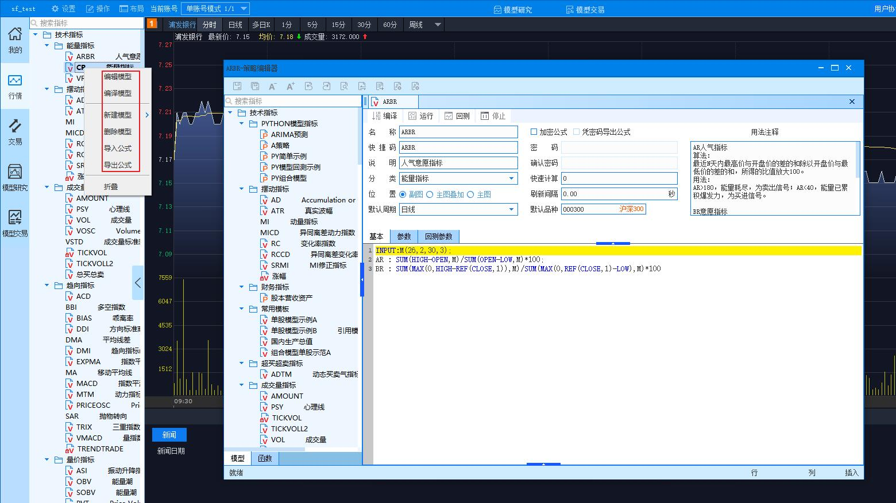
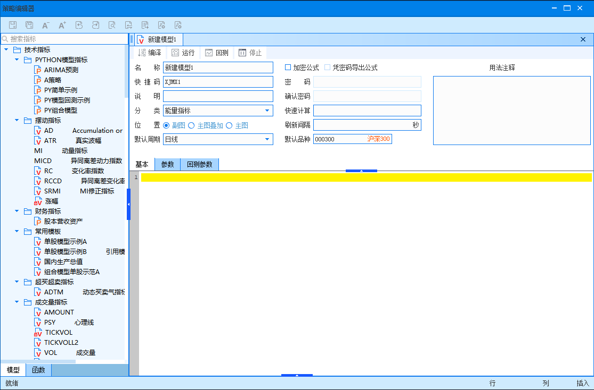

概述
本教程主要介绍量化交易版的公式编写系统，重点介绍模公式系统的编写规则、序列模式和逐 K 线模式下的运行原理及特点。本篇教程的读者需要有一定的 vb 语言编写经验。
详述
1 模型的编写规则
在系统面板左侧模型树中右键,可对模型策略进行 新建, 编辑和 导入等操作。

选 新建模型 ,出现下图模型编辑器主界面。

通过该界面我们可以了解系统的公式设定的内容和相关规则:
每一个指标公式必须有一个名称，这个名称由中文、字母和数字组成，公式名称在 同类公式中必须是唯一的；公式描述是一段文字，用来简单描述该公式的含义，在公式列表时显 示这段文字，这段文字不宜过长；同时该界面也定义了该指标显示的位置，是在主图上与K 线叠 加还是显示在副图上，一般来讲，只有少数几个主图指标会设定为主图叠加，例如MA均线、 BOLL线等。
参数：计算参数用来替代公式中所需要的常数，在使用时可以方便地调节参数，不 必修改公式就可以对计算方法进行调节。参数包括参数参数名、最小值、最大值、缺省值、步 长五个部分，参数名称用于标识参数，计算公式时采用缺省值计算，而最小值和最大值是参数的 调整范围。
其他：包括加密、快速计算、刷新间隔等内容。模型终端支持公式加密功能和凭密 码导出公式功能，如果您不想让别人看到您的公式内容，可以通过此功能对公式进行加密。
用法注释：模型注释是一段文字，相对于模型描述而言它可以很长，主要用来模型 一个公式如何使用、注意事项、计算方法等等。
交易参数：主要用于在交易中，单股模型通过接口单直接下单的交易参数设置。 所有的公式系统都是遵守统一的运算法则，统一的格式进行函数之间的计算，所以我们掌 握了技术指标公式的基本原理，其他的公式也不会出脱其外。 例如我们在指标公式系统内写下公式：
A：=X+Y； B：=A/Z； C：=B*0.618；分析以上公式,我们可以引出一下相关的格式和法则的结论:
1.1 数据的引用
数据来源
公式中的基本数据来源于接收的每日行情数据，这些数据有行情函数从数据库中按照一定 的方式提取，例如，高开低收，成交量，成交额等等。
数据类型
按照公式使用的数据类型，系统可以处理的数据分为两类：变量和常量。
所谓变量就是一个随着时间变化而变化的数据，例如成交量；常量就是一个永远不变的数 据。例如3，每个函数需要的参数可能是变量也可能是常量，不能随便乱用，函数计算的结果一 般是一个变量。
例如计算收盘价均线
MA(CLOSE,5)，MA函数要求第一个参数为变量，而CLOSE函数返回的正 是一个变量；MA函数要求的第二个参数是常量，5就是一个常量，所以我们就不能这样书写：MA(5,CLOSE)。
1.2 特殊数据引用
指标数据引用
经常地编制公式的过程当中，需要使用另外一个指标的值，如果按照通常的做法，重新编 写过这个指标显得很麻烦，因此有必要学习使用如何调用别的指标公式。
基本格式为：“指标.指标线”（参数）
a. 指标和指标线之间用顿号分开，一个指标不一定只有一条指标线，所以有必要在指标 后标注指标线的名称，但是如果缺失则表示引用最后一条指标线。
b. 参数在表达式的末尾，必须用括号括起来，参数之间用逗号分开，通过参数设置可以 选择设定该指标的参数，如果参数缺失则表示使用该指标的默认参数设置。
c. 整个表达式用引号引在其中，除参数以外。
例如
“MACD.DEF”（26,12,9）：表示计算MACD指标的DEA指标线，计算参数为26、12、9;
“MACD”（26,12,9）：表示该指标的最后一条指标线，计算参数是26、12、9;
“MACD”：表示该指标的最后一条指标线并且使用公式的默认参数。
跨周期引用指标数据
在量化交易版块决策交易系统当中允许使用不同分析周期上的指标数据，并且支持与自身长短不同的任意周期引用。
a. 基本格式为：“指标.指标线#周期” （参数），格式上只是比上面指标引用多了一个周期设定，其他内容和方法一样，在周期调用上存在以下对应关系：
MIN1：1分钟 MIN5：5分钟......DAY：日线 WEEK：周线 MONTH：月线 YEAR：年线
如上所示，MIN1表示的分析周期为1分钟，其它依次类推。例如：当前周期为日线，那么在公式中使用“MACD.DEA#WEEK”(26,12,9)表示使用了当天所在的本周的MACD指标中的数据。
b. 以上格式的扩展格式为：“指标.指标线##周期”（参数），该格式比基本格式采用了不同的对齐方式，简而言之，就是说“#”的格式调用的本周期所在的上一级周期的指标数据， 那么“##”的格式则表示调用了前一种格式的前一周期的指标数据，举上例而言， “MACD.DEF##WEEK”（26,12,9）表示的是从当天看来的上一周的数据，而基本格式就是当天看来的本周的数据。
此处,为了让您能更好的理解关于跨周期引用指标数据，我们添加了一个关于跨周期引用指标基本格式以及如何使用“##”来引用其他指标周期问题的示例。
跨周期引用指标基本格式----"指标.指标线#周期"(参数)；
跨周期引用指标扩展格式----"指标.指标线##周期"(参数)；
例 1.1 :
第一步: 新建一个指标,命名为
H, 在H中写入下面这行代码H1:high; L1:low;第二步: 新建第二个指标,命名为
TEST, 在TEST中写入下面的代码:preDayHigh: "H.H1##day"; //昨日最高价 preDayLOW: "H.L1##day"; //昨日最低价第三步: 将指标
TEST运行应用于盘面,您将在K线图上看到该品种昨日最高价和昨日最低价。
提示
模型编辑器中还提供了STKINDI函数----引用任意品种任意周期的任意指标输出，具体请参考模型编辑器自带的函数列表里的函数说明。
其他数据引用
使用以下的格式可以在当前的分析界面下引用大盘的数据或者其他个股的数据实现横向上的对比。
引用个股数据引用个股数据时使用下列格式："品种代码$数据"，在以上格式当中调用 CLOSE，VOL，AMOUNT等等！例如"SZ000002$VOL"表示000002该股本周期的成交量， "SH000001$CLOSE"同样也可以表示为大盘本周期的收盘价，此时的大盘被视为一只个股。
模型编辑器还提供了CALLSTOCK函数—可引用其他证券或合约的部分基础数据，具体请参考模型编辑器自带的函数列表里的函数说明。